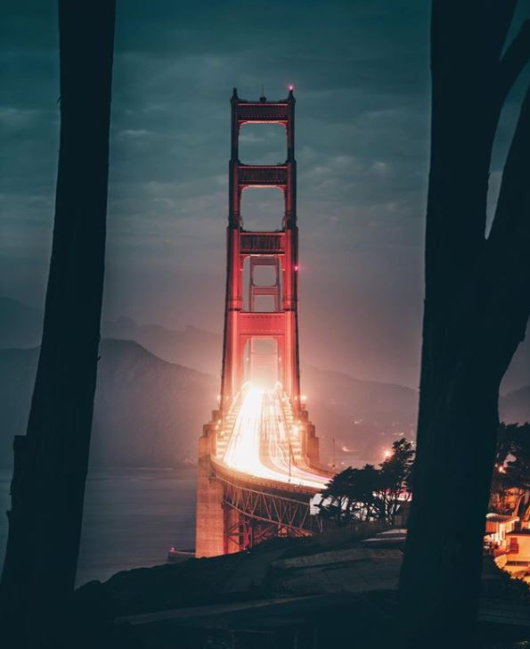
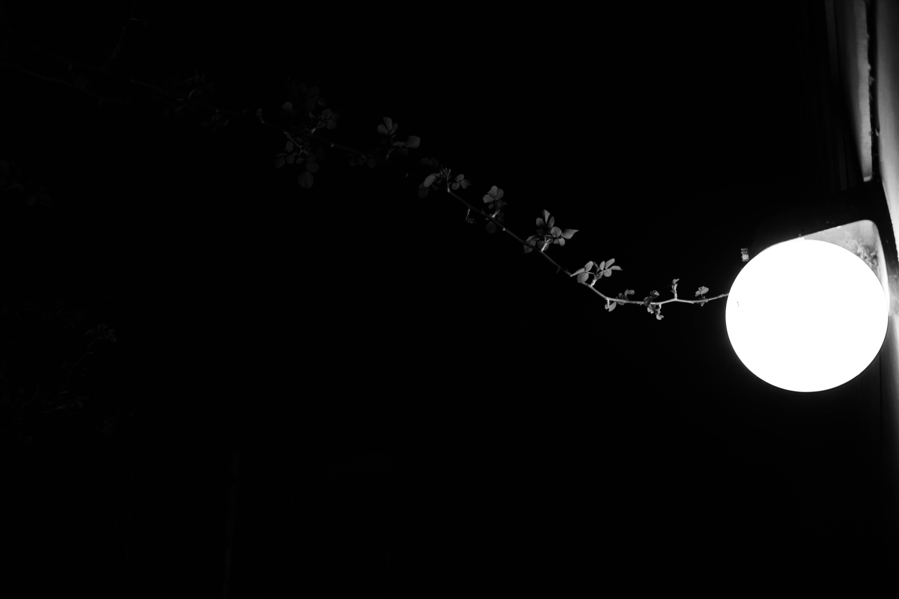

The Bay + Abstract


These Photographs are one of my most memorable shots. The Golden Gate was taken using a Canon 80D with a shutter speed of 15 seconds and a ISO of 150. The overall composition on the Golden Gate Bridge was focused on the light trails of the cars. The photo was later processed in Lightroom where I focused on the Exposure, Contrast, Blacks, and Shadows. The suttle view of the mountain range in the background and the greyish tone really adds a mysterious vibe.
The B&W image was focused more on an abstract composition. The suttle views of the branch can be viewed in two directions, the first being the branch reaching for the light and the second is the branch leaving into the dark. With B&W images I typically go for simplistic compositions, but leaving them abstract so the viewer can try to figure out a deeper meaning.
Home